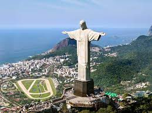
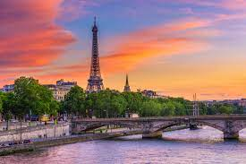
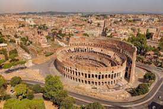
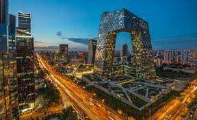
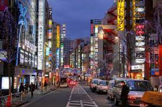

Ріо
1. Ріо де Жанейро є найбільшим містом Бразилії та другим за величиною містом на південному півкулі.
2. Назва міста означає "Річка січеєрів" і походить від португальського слова "rio" (річка) та імені місіонера Жана де Лаєта, який був першою європейською людиною, яка зайшла на берег Ріо-де-Жанейро у 1502 році.
3. Місто відоме своїм карнавалом, який є найбільшим карнавалом у світі. Він проходить щороку за підтримки місцевої влади та мільйонів туристів з усього світу.

4. У Ріо де Жанейро знаходиться одна з найвідоміших пам'яток світу - статуя Христа-Спасителя. Вона розташована на горі Корковадо та є символом міста та всієї країни.
5. Ріо де Жанейро є містом з великою кількістю пляжів, серед яких найбільш відомі Іпанема, Копакабана та Леблон.
6. Місто було колонією Португалії до 1822 року, коли Бразилія оголосила свою незалежність.
7. Ріо де Жанейро було господарем Олімпійських ігор 2016 року.
8. У місті є багато парків та природних заповідників, включаючи парк Тіджука та заповідник Серра-ду-Мар.
9. Місто має багату культурну спадщину, включаючи музей сучасного мистецтва, Національний музей та музей історії та культури народів Америки.
10. Ріо де Жанейро є одним з найважливіших економічних та фінансових ц
Нью Йорк
1. Нью-Йорк - це найбільше місто в США за населенням. На 2021 рік, за оцінками, в місті проживає більше 8,3 мільйонів жителів.
2. Манхеттен, один з п'яти районів міста Нью-Йорк, є одним з найбільш густонаселених районів у світі.
3. Нью-Йорк має найбільшу систему метрополітену у світі з понад 472 станціями та майже 350 км довжини ліній.
4. Місто має величезний вплив на світову економіку та фінанси. Нью-Йоркська фондова біржа є найбільшою біржею у світі за капіталізацією.
 6. Місто відоме своїми символами, такими як Статуя Свободи, Бруклінський міст та Емпайр-Стейт-білдінг.
6. Місто відоме своїми символами, такими як Статуя Свободи, Бруклінський міст та Емпайр-Стейт-білдінг.
7. Нью-Йорк є одним з найбільш культурних міст у світі з численними музеями, театрами та іншими культурними закладами. Одним із найвідоміших музеїв мистецтв є Метрополітен-музей мистецтв.
8. Центром міста вважається Таймс-сквер, відомий своїми рекламними щитами та яскравою архітектурою.
9. Нью-Йорк є величезним культурним розмаїттям, з багатьма різними національними та етнічними спільнотами, які проживають у місті.
10. Місто було місцем багатьох визначних подій у світовій історії, включаючи атаки 11 вересня 2001 року
Париж
1. Париж, столиця Франції, називається "містом світла" (ville lumière) через світлові фонтани, яскраві вуличні лампи та нічне освітлення пам'яток архітектури.
2. Місто відоме своїми пам'ятками, такими як Ейфелева вежа, Лувр та Нотр-Дам де Парі. Ейфелева вежа є однією з найвідоміших споруд у світі та була зведена як частка Всесвітньої виставки 1889 року.
3. Париж - це місто любові, з багатьма романтичними кутками, такими як Місто кохання (Pont des Arts), Місто кохання (Square Jehan Rictus) та місцем закоханих (Place des Abbesses).
4. Париж має величезний культурний розмаїття, з численними музеями, театрами, концертними залами та галереями мистецтв. Одним з найвідоміших музеїв є Лувр, який містить одну з найбільших колекцій мистецтва у світі.

5. Паризькі магазини з одягом та взуття, такі як Chanel, Dior та Louis Vuitton, відомі по всьому світу, як бренди класу люкс.
6. Місто має дуже ефективну систему громадського транспорту, що включає метро, автобуси та велосипеди для прокату.
7. Париж славиться своєю кухнею, включаючи французькі круасани, багети та сир.
8. У місті є більше 450 парків та садів, таких як Парк Монсо, Імператорський сад та Парк Бутша, які пропонують відпочинок від шуму міської зони.
9. Париж є домом для численних вищих навчальних закладів, включаючи Сорбонну,
Рим
1. Рим - столиця Італії та колиска Римської імперії, яка вплинула на культуру, мову та архітектуру світу.
2. Місто було засноване за легендою в 753 році до нашої ери братами Ромулом та Ремом.
3. Рим має найбільшу кількість католицьких церков та папських палаців у світі, включаючи Ватиканську бібліотеку та папський палац.

4. Місто відоме своїми античними пам'ятками, такими як Колізей, Римський форум та Пантеон. Колізей - це арена, на якій проводилися бої гладіаторів та інші види розваг.
5. У Римі знаходиться найменший незалежний державний утвір у світі - Ватикан, який є духовним центром римо-католицької церкви.
6. Рим має більше 900 церков та більше 280 фонтанів, у тому числі відомий Фонтан Треві.
7. Італійська кухня, включаючи піцу та пасту, є відомою по всьому світу, а Рим є одним з найкращих місць, щоб спробувати їх на місці.
8. Рим має більше 500 музеїв та галерей мистецтв, включаючи Галерею Боргезе та Національний музей Риму.
9. Рим - одне з найстаріших міст у світі, тому в ньому є безліч історичних та культурних пам'яток, таких як Ватиканські музеї та Капітолійські музеї.
10. Рим має дуже розвинуту систему громадського транспорту, що включає метро, автобуси та трамваї, що дозволяє легко переміщуватися по місту.
Пекин
1. Пекін є столицею Китаю з давніх часів і є одним з найбільших та найважливіших міст у світі.
2. Назва "Пекін" означає "північна столиця", оскільки місто розташоване на північному заході Китаю.
3. У Пекіні знаходиться знаменитий Палац Небесної Чистоти, що був колискою імператорської династії і де відбувалися важливі церемонії та релігійні обряди.

4. Відомий Великий Китайський Мур проходить біля Пекіна, та є одним з найбільших інженерних див у світі.
5. Пекін є місцем проведення Олімпійських ігор 2008 року, де було зведено декілька нових спортивних споруд, таких як Національний стадіон і Палац водних видів спорту.
6. У Пекіні знаходиться найбільший площадь в світі - Тяньаньме́нь, де проводяться великі заходи та демонстрації.
7. Місто відоме своєю кухнею, зокрема стравами, які включають пекінську качку та різноманітні десерти.
8. У Пекіні є багато культурних та історичних пам'яток, таких як Храм Небесного Спокою, Мавзолей Мао Цзедуна та Китайський Національний Музей.
9. У Пекіні є багато великих парків, таких як Царський ліс і Парк Ціаньта, де можна насолоджуватися природою та відпочити від шумного міського життя.
10. Пекін - один з найбільших та найбільш розвинених міст у світі, з високими хмарочосами, сучасними технологіями та багатим культурним сп
Токіо
1. Токіо - найбільше місто Японії та одне з найбільших міст у світі, з населенням понад 13 мільйонів чоловік.
2. Місто є важливим культурним та економічним центром Японії, з багатими традиціями та сучасними технологіями.
3. У Токіо знаходиться Скайскрейпер Токіо, який є одним з найвищих хмарочосів у світі.
4. Токіо відоме своїми незвичайними кафе, де клієнти можуть насолоджуватися компанією сов, котів та інших тварин.

5. Місто є джерелом багатьох впливових культурних рухів, таких як манґа, аніме та кавай-культура.
6. Токіо є місцем проведення багатьох великих заходів, таких як Олімпійські ігри 1964 року та Олімпійські ігри 2020 року, які були перенесені на 2021 рік через пандемію COVID-19.
7. Місто має дуже ефективну систему громадського транспорту, що включає метро, залізницю та автобуси.
8. У Токіо є багато визначних місць, таких як двірець Імператора, храм Сенсо-дзі та Токійський башта.
9. Місто має багату кухню, включаючи суші, рамен та унагі, та знамениті десерти, такі як мочі та дораякі.
10. Токіо є одним з найбільш розвинених технологічних центрів у світі, де багато компаній, таких як Sony, Toyota та Nintendo, мають свої штаб-квартири.